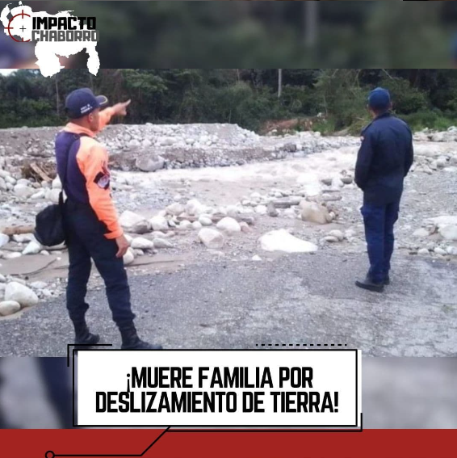

¡ALERTA, LAS LLUVIAS ESTÁN HACIENDO ESTRAGOS!
Una familia que se trasladaba en moto perdió la vida al deslizarse un terreno en el sector San Benito, en el paramo Guaraque, vía Tovar. Los bomberos, encontraron la moto donde se trasladaban los dos adultos y un menor de edad actualmente fallecidos, todos eran integrantes de la misma familia. Entonces, llamaron a los funcionarios del CICPC para que procedieran a identificar los tres cadáveres. Las fuertes lluvias que han caído en los últimos días en el estado Mérida han causado derrumbes, inundaciones y anegaciones.
Nicolás Maduro, aumento el CestaTriste a 40$ y el Bono de Guerra a 20$, como todos saben estos no inciden en las prestaciones sociales y el monto total de 60$ será indexado mensualmente al BCV dizque para que no pierda su valor. Maduro, se dio el lujo de mantener al pueblo cobrando el pírrico salario mínimo de 130,00 que al precio de 24,75 del Banco Central equivale a 3$ mensuales. Las focas oficialistas aplaudieron y Gritaban “Así es que se gobierna”.
La película "El sonido de la Libertad", está basada en la historia real de Tim Ballard un exagente del FBI y su trama ha generado gran interés en el imperio por la trata de niños en Latinoamérica. La película narra la historia de un exagente del gobierno gringo que se embarca en una misión peligrosa en la selva colombiana pa´ rescatar a un poco e´ menores de edad. La dirección está a cargo de Alejandro Gómez Monteverde y su protagonista es Jim Caviezel.
¡ADIOS!

¡LLEGÓ EL NOMBRE X! Ha fallecido cristianamente el PAJARITO AZUL de Twitter y lo sustituye una X.